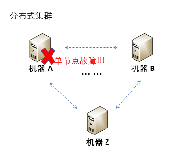
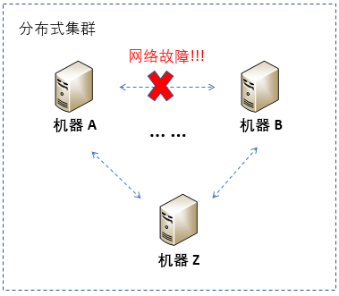
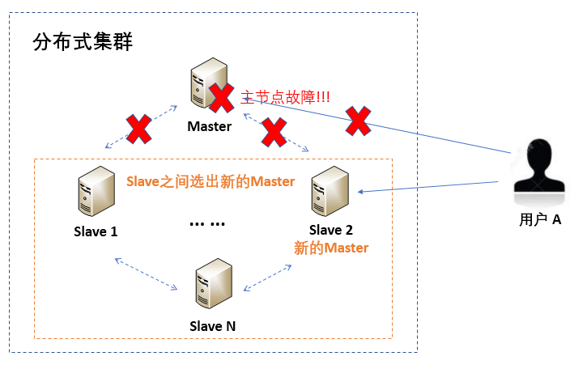
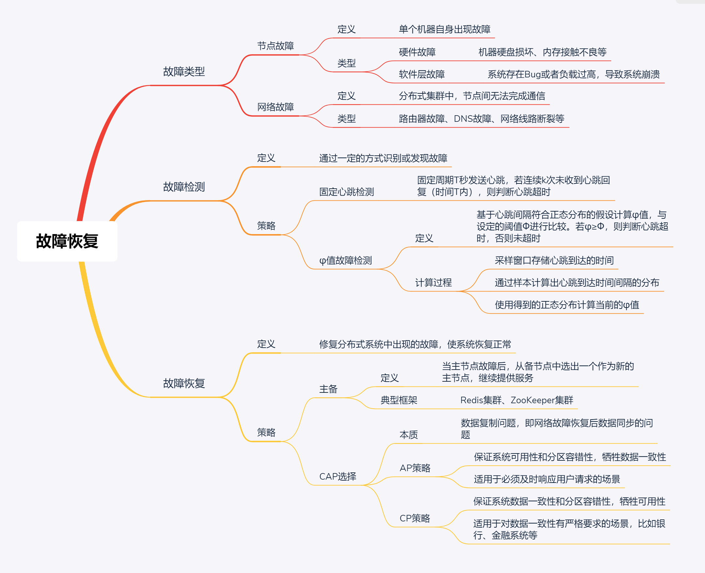

- 00 开篇词 四纵四横，带你透彻理解分布式技术.md.html
- 01 分布式缘何而起：从单兵，到游击队，到集团军.md.html
- 02 分布式系统的指标：啥是分布式的三围.md.html
- 03 分布式互斥：有你没我，有我没你.md.html
- 04 分布式选举：国不可一日无君.md.html
- 05 分布式共识：存异求同.md.html
- 06 分布式事务：All or nothing.md.html
- 07 分布式锁：关键重地，非请勿入.md.html
- 08 分布式技术是如何引爆人工智能的？.md.html
- 09 分布式体系结构之集中式结构：一人在上，万人在下.md.html
- 10 分布式体系结构之非集中式结构：众生平等.md.html
- 11 分布式调度架构之单体调度：物质文明、精神文明一手抓.md.html
- 12 分布式调度架构之两层调度：物质文明、精神文明两手抓.md.html
- 13 分布式调度架构之共享状态调度：物质文明、精神文明多手协商抓.md.html
- 14 答疑篇：分布式事务与分布式锁相关问题.md.html
- 15 分布式计算模式之MR：一门同流合污的艺术.md.html
- 16 分布式计算模式之Stream：一门背锅的艺术.md.html
- 17 分布式计算模式之Actor：一门甩锅的艺术.md.html
- 18 分布式计算模式之流水线：你方唱罢我登场.md.html
- 19 分布式通信之远程调用：我是你的千里眼.md.html
- 20 分布式通信之发布订阅：送货上门.md.html
- 21 分布式通信之消息队列：货物自取.md.html
- 22 答疑篇：分布式体系架构与分布式计算相关问题.md.html
- 23 CAP理论：这顶帽子我不想要.md.html
- 24 分布式数据存储系统之三要素：顾客、导购与货架.md.html
- 25 数据分布方式之哈希与一致性哈希：“掐指一算”与“掐指两算”的事.md.html
- 26 分布式数据复制技术：分身有术.md.html
- 27 分布式数据之缓存技术：“身手钥钱”随身带.md.html
- 28 分布式高可靠之负载均衡：不患寡，而患不均.md.html
- 29 分布式高可靠之流量控制：大禹治水，在疏不在堵.md.html
- 30 分布式高可用之故障隔离：当断不断，反受其乱.md.html
- 31 分布式高可用之故障恢复：知错能改，善莫大焉.md.html
- 32 答疑篇：如何判断并解决网络分区问题？.md.html
- 33 知识串联：以购买火车票的流程串联分布式核心技术.md.html
- 34 搭建一个分布式实验环境：纸上得来终觉浅，绝知此事要躬行.md.html
- 特别放送 Jackey：寄语天涯客，轻寒底用愁.md.html
- 特别放送 分布式下的一致性杂谈.md.html
- 特别放送 崔新：追根溯源，拨开云雾见青天.md.html
- 特别放送 徐志强：学习这件事儿，不到长城非好汉.md.html
- 特别放送 那些你不能错过的分布式系统论文.md.html
- 结束语 为什么说提升职业竞争力要从尊重、诚实开始？.md.html
- 捐赠
31 分布式高可用之故障恢复：知错能改，善莫大焉
你好，我是聂鹏程。今天，我来继续带你打卡分布式核心技术。
在上一篇文章，我带你学习了故障隔离。故障隔离的目的是，对故障组件进行隔离，以避免其影响系统中的其他组件，尽可能保证分布式系统的可用性。
在分布式系统中，故障在所难免，发生故障后仅仅进行隔离还远远不够，还需要进行故障恢复。比如，现在集群中有3个节点，节点1故障后，对节点1进行隔离，如果节点2、节点3紧接着故障了，又隔离了这两个节点。那么，整个集群就无法继续提供服务了，何谈分布式系统的高可用呢？
为了解决这种问题，分布式领域还有一个关键技术来保证系统的高可用，即故障恢复。
接下来，我们就一起打卡分布式系统的故障恢复技术吧。
分布式故障基础知识
在介绍故障恢复之前，我先与你说说分布式系统中会有哪些故障类型。
故障类型
在任何一个分布式系统中，故障都是不可避免的。这里的故障，通常包括两类：
- 一类是物理故障，比如硬盘损坏、断电断网、硬件升级等；
- 另一类是软件层故障，比如系统存在Bug导致系统崩溃、系统负载过高导致系统崩溃等。
在讨论分布式系统故障时，我们通常还会从是否是网络导致的故障的角度来进行故障划分，包括节点故障和网络故障，而这两类故障可能同时包括物理故障和软件层故障。由于软件层故障和具体的程序实现等相关，因此主要由开发者根据自己的实现去解决；而物理故障通常具有很多共同特征，因此今天我主要针对物理故障导致软件不可用的情况进行讲解。
首先，我们看一下节点故障。
简单地说，节点故障就是单个机器自身出现故障。比如，由机器A、B，……，Z构成的分布式集群中，机器A自身出现故障，而不是非机器之间的网络连接出现故障，就是节点故障。

节点故障有很多种，大体可以分为两类：
- 一类是硬件故障，比如机器硬盘损坏、内存接触不良等；
- 另一类是软件故障，比如由于请求过多，超过服务器处理能力上限，导致无法处理，又或者是机器被攻击，导致机器瘫痪等。
节点故障在软件层的表现结果是，该机器无法为用户提供服务。
其次，我们看一下网络故障。
简单地说，网络故障就是分布式集群中，节点之间无法完成通信。比如，由机器A，B，……，Z构成的分布式集群中，机器间比如机器A和B之间无法完成通信，就属于网络故障。

网络故障也有很多种，比如路由器故障、DNS故障、网络线路断裂等。这些物理故障在软件层的表现结果是，机器间无法通信，影响分布式应用正常提供服务。
了解了故障的类型，我们还要搞明白如何检查到故障，也就是如何进行故障检测，因为这是故障恢复的前提。
故障检测
故障检测，就是指通过一定的方式识别或发现故障。就好比，我们把火灾、地震等危险事件看作是故障，采用火灾报警器、地震仪等来检测发现火灾或地震。
如果可以提前检测到事件的发生，就能将损失降到最小。在分布式系统中，检测硬件故障通常比较麻烦，因此会通过查看软件层的表现结果来进行故障检测。比如，网络故障导致服务器之间无法通信，因此就可以通过检测服务器之间是否可以通信（比如，服务器之间心跳包是否可以正常地发送和接收），来检测是否存在网络故障。
关于故障检测的具体策略，我会在后文与你展开。当检测到故障后，就需要进行故障恢复了。
故障恢复
故障恢复，就是指修复分布式系统中出现的故障，使系统恢复正常。简单来说，故障恢复就是故障发生之后的弥补方案，可以理解为对故障进行修正或修复，以保证服务正常运行，有点类似“知错能改，善莫大焉”。
接下来，我们就具体看看故障检测和故障恢复的原理或者说策略吧。
分布式故障检测原理
在分布式系统中，常见的故障检测方法是心跳机制。基于心跳进行故障检测的策略主要分为两类，固定心跳检测策略和根据历史心跳信息预测故障策略。
还记得我在第22篇文章中，与你介绍的通过心跳方式判断集中式架构和非集中式架构中节点是否存活的方法吗？其实，这里用到的就是固定心跳检测策略。具体的检测原理，你可以再回顾下这篇文章。
所以接下来，我主要与你分享基于历史心跳消息预测故障的策略，也就是我们常说的\(φ\)值故障检测。
\(φ\)值故障检测是基于心跳间隔符合正态分布的假设进行计算的。其中，\(φ\)值是用来评估心跳是否超时的概率，是对心跳间隔的概率求对数，将非整数转换为整数以便于理解。
\(φ\)值故障检测方法中，通常会设置一个阈值Ф，若当前心跳计算得到的\(φ≥Ф\)，则判断心跳超时，否则心跳未超时。
那么，\(φ\)值是如何计算的呢？
从流程上来讲，\(φ\)值的计算可以分为三步，即：
- 采样窗口存储心跳到达的时间；
- 通过样本计算出心跳到达时间间隔的分布；
- 使用得到的正态分布计算当前的\(φ\)值。
接下来，我们就具体看看这三个阶段吧。
第一步：采样窗口存储心跳到达的时间。
采样窗口就是一个具有固定容量的容器，一般存储近k次的心跳信息，每次心跳到达时，会将到达时间存储到采样窗口，如果采样窗口已满，则会删除窗口中最旧的数据。
比如，采样窗口最多存储最近10次心跳到达的时间，t1，t2，……， t10，当第11次心跳到来时，采样窗口会将t1删除，存入t11。到达时间的间隔很容易得到，比如第11次心跳到来后，到达时间的间隔是t3 - t2，t4 – t3，……，t11 – t10。通过这些采样数据，可以计算出样本的平均值μ和方差 σ2，以便后面计算\(φ\)值。当然，随着新的心跳到来，这些数据会进行相应的更新。
第二步：通过样本计算出心跳到达时间间隔的分布。
\(φ\)值故障检测是假设心跳到达时间间隔的分布遵循正态分布，假设Plater(t)表示接收到上一次心跳之后t个时间片能收到下一次心跳的概率，则通过第一步中得到的样本平均值µ和方差 σ2，得到Plater(t)的计算结果如下：
\[P\_{later}(t)=\\frac{1}{\\sigma\\sqrt{2\\pi}}\\int\_{t}^{+\\infty}e^{-\\frac{(x-u)^{2}}{2\\sigma^{2}}}dx=1-F(t)\]
其中，F(t)是具有均值µ和方差 σ2的正态分布的累积分布函数。
第三步：使用得到的正态分布计算当前的\(φ\)值。
假设，Tlast表示最近一次接收到心跳的时间，tnow表示当前时间。将Tlast、tnow，和第二步求得的Plater(t)，带入以下公式即可求得\(φ\)值：
\[\\varphi(t\_{now})\\xlongequal{def}-log\_{10}(P\_{later}(t\_{now}-T\_{last}))\]
求得\(φ\)值后，与阈值Ф进行比较，即可判断节点是否发生故障。
以上就是\(φ\)值故障检测策略的介绍，它的基本思想是利用了历史心跳信息，来降低误判的可能性。如果你想了解这个策略更详细的内容，可以参考“The \(φ\) Accrual Failure Detector”这篇论文。
这篇论文中提到，当阈值Ф=1时，误判的可能性大约为10%；Ф=2时，误判的可能性大约为1%；Ф=3时，误判的可能性大约为0.1% ······
通过以上讲解，可以看出，\(φ\)值故障检测策略可以根据历史心跳信息动态预测下一次心跳是否超时，并可以通过设置阈值来自由调控误判的可能性。目前，该策略已被应用到一些框架中，比如我们熟悉的Akka集群的故障检测，便是采用了\(φ\)值故障检测策略。
当采用故障检测策略检测到故障后，故障如何恢复呢？接下来，我们就一起看看故障恢复策略吧。
故障恢复策略
关于故障恢复策略，我从单节点故障和网络故障两个维度展开。
对于单节点故障问题，往往采取主备策略，即当主节点故障后，从备节点中选出一个作为新的主节点，以继续提供服务。这种备升主的方式比较好理解。
如下图所示，用户A访问分布式集群时一直是与Master交互的，但当Master故障后，其他Slave会通过分布式选举算法选出一个新的主节点。
假设，从Slave 1、Slave 2和Slave 3中选举出Slave 2作为新的Master，则Slave 2需要承担原来Master的职责，继续为用户提供服务，因此当用户A再次访问集群时，提供服务的是新选出的Master，也就是Slave 2。这就是备升主的过程。
关于分布式选举算法的相关内容，你可以再回顾下第4篇文章。

从用户A的角度来看，并不会感受到服务有什么异常，因为依旧可以正常访问集群。因此，主备策略可以大大提高分布式系统的可用性，在分布式系统中随处可见。比如，第10篇文章涉及的Redis集群、第23篇文章中讲到的ZooKeeper集群等，都是采用了这种主备策略来做故障恢复。
而对于网络故障问题的解决方案，简单来说就是C、A、P选择的问题，即在分布式系统的可用性和数据一致性之间做权衡。根据不同的应用场景，选择不同的解决方案。
当分布式系统中出现网络故障时，对于高可用性要求严格的系统，比如要求必须及时响应用户的场景，就需要采用保AP弃C的策略；对于数据一致性有严格要求的系统，比如银行、金融系统等场景，就需要采用保CP弃A的策略。具体内容，你可以再回顾下第23篇文章。
其实，网络故障恢复问题也可以看作数据复制的问题，即网络故障恢复后节点间数据同步的问题。还记得第26篇文章中的同步复制、异步复制和半同步复制技术吗？其中，半同步复制技术因为既能有效保证数据安全，又能满足系统高性能的要求，所以最受欢迎，被大多数分布式系统采用。
关于如何通过半同步复制技术，来进行网络故障恢复，你可以再回顾下第26篇文章的相关内容。
其实，节点故障和网络故障也有交叉的地方，比如网络故障产生的原因可能是节点故障，即因为节点故障导致节点间无法通信，而不是纯粹的网络链路问题。这种情况有两种可能性，一种是节点临时性故障，即一段时间后就会恢复；一种是节点永久性故障，即节点不会恢复。针对第一种情况，只需等到故障恢复后，数据进行同步即可；第二种情况则需要备升主策略来解决。
知识扩展：固定心跳检测和基于历史心跳信息预测故障的策略，各有什么特点呢？
首先，我们看一下固定心跳检测。
固定心跳检测的核心是，固定周期T秒发送心跳，若连续k次未收到心跳回复（时间T内），则判断心跳超时的时间为k*T秒。可以看出，k和T的设置非常重要。
比如，对于要求秒级故障检测的场景（时延敏感性场景），则k*T≤1s，因此需要将T设置为ms级，比如200ms，k设置为1000/200=5次。但，这样一来容易导致误判。因为判断超时的时间设置得太短，很可能是系统做内存回收或系统本身有高任务在运行导致心跳回复延后。
而对于时延不太敏感的场景，k或T可以设置得大一些，降低误判率，但却会增加发现故障的时间。
接下来，我们看一下\(φ\)值故障检测。\(φ\)值故障检测是基于心跳间隔符合正态分布的假设，通过对历史心跳数据采样来预测当前心跳是否超时的。也就是说，心跳间隔符合比较平稳或符合规律的情况下，比较适合，但对于具有突发情况或心跳间隔无规律的场景误判率比较高。
在网络状况确定且比较稳定的场景下，大多数系统会采用固定心跳检测策略，因为其可以根据网络状况与业务场景自主设定合适的k和T值，简单有效；而当网络状况有所变化，且变化有规律的场景，则可以使用\(φ\)值故障检测策略。
总结
今天，我主要带你学习了分布式高可用技术中的故障恢复技术。
首先，我为你介绍了分布式系统中的故障类型，主要包括物理故障和软件故障，软件故障主要是由于程序或软件Bug等导致，通常由开发者在开发或测试过程中解决，而物理故障导致软件不可用的故障类型主要分为两类，节点故障和网络故障。
其次，我为你介绍了故障检测方法。故障检测方法主要是心跳检测方法，包括固定心跳策略和基于历史信息的心跳策略。其中，固定心跳策略的具体原理见第22篇文章中的相关内容；基于历史心跳策略的核心是通过统计历史数据规律，以预测当前心跳是否超时以进行故障检测；
紧接着，我为你介绍了故障恢复策略，主要涉及备升主、数据复制等关键技术，相关关键技术原理，你可以再回顾第4篇文章中的分布式选举算法，以及第26篇文章中的数据复制技术。
最后，我再通过一张思维导图来归纳一下今天的核心知识点吧。

加油，相信通过今天的学习，分布式系统中的故障恢复技术对你来说不再陌生了，你可以根据业务场景设计出对应的故障检测和故障恢复策略了。行动起来吧，加油！
思考题
在分布式系统中，网络分区是一个非常重要的故障问题。那么如何判断网络分区呢？以及出现网络分区后，如何处理呢？
我是聂鹏程，感谢你的收听，欢迎你在评论区给我留言分享你的观点，也欢迎你把这篇文章分享给更多的朋友一起阅读。我们下期再会！
© 2019 - 2023 Liangliang Lee. Powered by gin and hexo-theme-book.